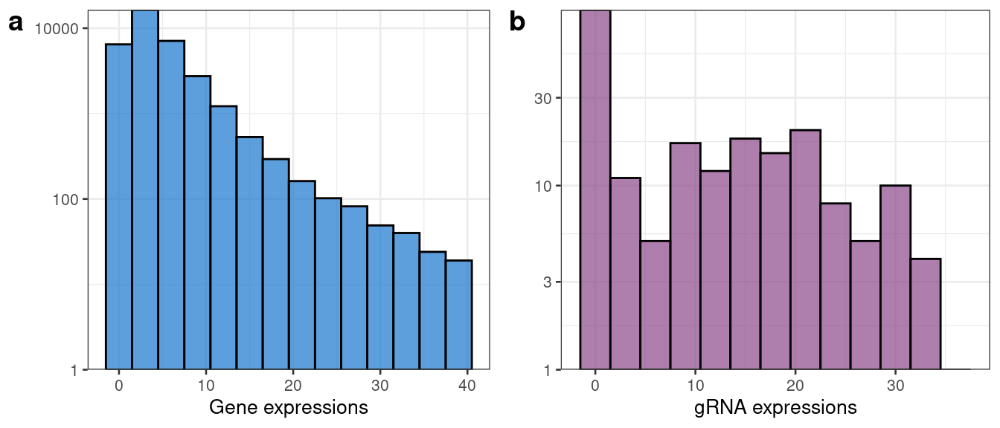
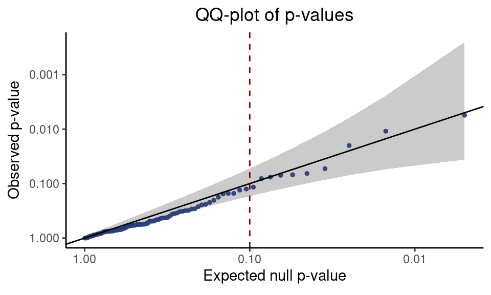

Last updated: 2022-05-26
Checks: 7 0
Knit directory: GSFA_analysis/
This reproducible R Markdown analysis was created with workflowr (version 1.7.0). The Checks tab describes the reproducibility checks that were applied when the results were created. The Past versions tab lists the development history.
Great! Since the R Markdown file has been committed to the Git repository, you know the exact version of the code that produced these results.
Great job! The global environment was empty. Objects defined in the global environment can affect the analysis in your R Markdown file in unknown ways. For reproduciblity it's best to always run the code in an empty environment.
The command set.seed(20220524) was run prior to running the code in the R Markdown file. Setting a seed ensures that any results that rely on randomness, e.g. subsampling or permutations, are reproducible.
Great job! Recording the operating system, R version, and package versions is critical for reproducibility.
Nice! There were no cached chunks for this analysis, so you can be confident that you successfully produced the results during this run.
Great job! Using relative paths to the files within your workflowr project makes it easier to run your code on other machines.
Great! You are using Git for version control. Tracking code development and connecting the code version to the results is critical for reproducibility.
The results in this page were generated with repository version 4628ab4. See the Past versions tab to see a history of the changes made to the R Markdown and HTML files.
Note that you need to be careful to ensure that all relevant files for the analysis have been committed to Git prior to generating the results (you can use wflow_publish or wflow_git_commit). workflowr only checks the R Markdown file, but you know if there are other scripts or data files that it depends on. Below is the status of the Git repository when the results were generated:
Ignored files:
Ignored: .Rhistory
Ignored: .Rproj.user/
Ignored: analysis/figure/
Untracked files:
Untracked: code/run_sceptre_LUHMES_data.sbatch
Untracked: code/run_sceptre_Tcells_stimulated_data.sbatch
Untracked: code/run_sceptre_Tcells_unstimulated_data.sbatch
Untracked: code/sceptre_LUHMES_data.R
Untracked: code/sceptre_Tcells_stimulated_data.R
Untracked: code/sceptre_Tcells_unstimulated_data.R
Unstaged changes:
Modified: analysis/index.Rmd
Deleted: code/README.md
Note that any generated files, e.g. HTML, png, CSS, etc., are not included in this status report because it is ok for generated content to have uncommitted changes.
These are the previous versions of the repository in which changes were made to the R Markdown (analysis/test_sceptre.Rmd) and HTML (docs/test_sceptre.html) files. If you've configured a remote Git repository (see ?wflow_git_remote), click on the hyperlinks in the table below to view the files as they were in that past version.
| File | Version | Author | Date | Message |
|---|---|---|---|---|
| Rmd | 4628ab4 | kevinlkx | 2022-05-26 | test SCEPTRE |
This vignette illustrates application of sceptre to an example high-multiplicity-of-infection (MOI) single-cell CRISPR screen dataset. We begin by installing and loading all required packages, including the up-to-date version of sceptre.
install.packages("devtools")
devtools::install_github("katsevich-lab/sceptre")
install.packages("tidyverse")
install.packages("cowplot")library(tidyverse)
library(cowplot)
library(Matrix)
library(sceptre)We proceed in seven steps.
The first step is to prepare the data to pass to sceptre. We must prepare three separate data objects: the gene-by-cell expression matrix, the gRNA-by-cell expression matrix, and the cell-specific matrix of covariates.
We load the example gene-by-cell and gRNA-by-cell expression matrices that are included in the sceptre package.
data(gene_matrix)
data(gRNA_matrix)Briefly, gene_matrix (respectively, gRNA_matrix) is a 20 x 40,000 (respectively, 50 x 40,000) matrix of gene (respectively, gRNA) unique molecular identifier (UMI) counts. The data are taken from the paper "A genome-wide framework for mapping gene regulation via cellular genetic screens" by Gasperini et al., 2019. The authors used a CRISPRi-based assay to target 5,000+ putative enhancers in a population of K562 cells. The authors additionally targeted 200+ gene transcription start sites (TSSs) and designed a library of 50 non-targeting gRNAs to serve as negative controls. Genes, gRNAs, and cells are all down-sampled to reduce the size of the data. One can use the commands ?gene_matrix and ?gRNA_matrix to read more about these data.
The row names of gene_matrix and gRNA_matrix are the gene IDs and gRNA IDs, respectively. The gRNA IDs are gRNA-specific oligonucleotide barcodes. In general the gRNA IDs must be strings that uniquely identify each gRNA. The column names, meanwhile, are the cell barcodes. Next, gene_matrix and gRNA_matrix are sparse matrices (as implemented by the Matrix package). In general these matrices can be either sparse matrices or standard (dense) R matrices. We print a few rows and columns of gene_matrix and gRNA_matrix to get a sense of what the data look like.
options(width = 300)
# gene_matrix; rows are genes, columns are cells
gene_matrix[1:10, 1:3]
#> 10 x 3 sparse Matrix of class "dgTMatrix"
#> CTCGAAAGTCCATGAT-1_2B_7 GACACGCTCAAAGACA-1_2B_4 GGCTCGATCTGTGCAA-1_1B_1
#> ENSG00000111057 1 5 1
#> ENSG00000121211 . 1 .
#> ENSG00000134809 3 10 1
#> ENSG00000166902 1 3 .
#> ENSG00000172809 12 19 33
#> ENSG00000105298 . . .
#> ENSG00000108389 . 1 .
#> ENSG00000157985 . . .
#> ENSG00000107731 . . .
#> ENSG00000184357 . 1 .
# gRNA matrix; rows are gRNAs, columns are cells
gRNA_matrix[1:10, 1:3]
#> 10 x 3 sparse Matrix of class "dgTMatrix"
#> CTCGAAAGTCCATGAT-1_2B_7 GACACGCTCAAAGACA-1_2B_4 GGCTCGATCTGTGCAA-1_1B_1
#> TGTCAGTCCTCCCTCCCCCA . . .
#> CTAAACAGTGAAAGTCACAG . . .
#> GCTCCAATCATATTCTAGAG . . .
#> GATGAAACCTAAGGGCACAC . . .
#> TGCAGACGAGTGTCTCAGAG . . .
#> TCATCTTGAAGTCAGCTCCA . . 3
#> GAGAATGGCATGGAGCTCAA . . .
#> AGAGCAAGAGAGCAACTCCG . . .
#> CAGCAATTCTACCTTCAGGT . . .
#> TTTGGTTGTTGCAAATGAGG . . .We also plot a histogram of the counts of an arbitrarily selected gene ("ENSG00000111057") and gRNA ("TGTCAGTCCTCCCTCCCCCA") to visualize the data.
example_gene <- gene_matrix["ENSG00000111057",]
example_gRNA <- gRNA_matrix["TGTCAGTCCTCCCTCCCCCA",]
hist_gene <- ggplot(data = example_gene %>% tibble(count = .) %>% filter(count >= 1, count <= 40), mapping = aes(x = count)) +
geom_histogram(binwidth = 3, col = "black", fill = "dodgerblue3", alpha = 0.7) +
scale_y_continuous(trans='log10', expand = c(0, NA)) + xlab("Gene expressions") + ylab("") + theme_bw(base_size = 10)
hist_gRNA <- ggplot(data = example_gRNA %>% tibble(count = .) %>% filter(count >= 1, count <= 40), mapping = aes(x = count)) +
geom_histogram(binwidth = 3, col = "black", fill = "orchid4", alpha = 0.7) +
scale_y_continuous(trans='log10', expand = c(0, NA)) + xlab("gRNA expressions") + ylab("") + theme_bw(base_size = 10)
plot_grid(hist_gene, hist_gRNA, labels = c("a", "b"))
As expected, the data are highly discrete counts. Note that we do not normalize either the gene or gRNA expression matrices, opting instead to work directly with the raw counts.
Next, we load the cell-wise covariate matrix, covariate_matrix.
data(covariate_matrix)
head(covariate_matrix)
#> lg_gRNA_lib_size lg_gene_lib_size p_mito batch
#> CTCGAAAGTCCATGAT-1_2B_7 6.023448 9.276783 0.03861979 prep_batch_2
#> GACACGCTCAAAGACA-1_2B_4 6.561031 10.274982 0.04499379 prep_batch_2
#> GGCTCGATCTGTGCAA-1_1B_1 8.196988 9.744375 0.02460745 prep_batch_1
#> CTGGTCTGTGGGTATG-1_2B_7 5.929589 9.260368 0.03326996 prep_batch_2
#> TCTGGAAGTACATGTC-1_2A_5 7.134094 10.002880 0.07319942 prep_batch_2
#> AACTGGTGTAGAGCTG-1_1A_4 5.655992 8.875567 0.01327186 prep_batch_1covariate_matrix is a 40,000 x 4 data frame of "technical factors," or covariates. The row names of this data frame are the cell barcodes. The covariates are as follows:
Log-transformed gene library size (lg_gene_lib_size); this vector can be computed via log(colSums(gene_matrix))
Log-transformed gRNA library size (lg_gRNA_lib_size); this vector can be computed via log(colSums(gRNA_matrix))
Sequencing batch (batch)
Percentage of gene transcripts that map to mitochondrial genes (p_mito)
We strongly recommend that users include the same four covariates (i.e., lg_gene_lib_size, lg_gRNA_lib_size, batch, and p_mito) in their own cell-wise covariate matrix.
The second step is to impute perturbation assignments onto the cells. For a given gRNA and cell, we label the cell as having been perturbed by the gRNA if the UMI count of the gRNA within the cell exceeds a user-specified, integer-valued threshold; otherwise, we label the cell has having been unperturbed by the gRNA. The default threshold that we use for this purpose is 3, which we have found to work well in practice. This simple thresholding routine is implemented by the function threshold_gRNA_matrix.
perturbation_matrix <- threshold_gRNA_matrix(gRNA_matrix)
# `perturbation_matrix` is a thresholded version of `gRNA_matrix`
perturbation_matrix[1:10, 1:3]
#> 10 x 3 sparse Matrix of class "lgTMatrix"
#> CTCGAAAGTCCATGAT-1_2B_7 GACACGCTCAAAGACA-1_2B_4 GGCTCGATCTGTGCAA-1_1B_1
#> TGTCAGTCCTCCCTCCCCCA . . .
#> CTAAACAGTGAAAGTCACAG . . .
#> GCTCCAATCATATTCTAGAG . . .
#> GATGAAACCTAAGGGCACAC . . .
#> TGCAGACGAGTGTCTCAGAG . . .
#> TCATCTTGAAGTCAGCTCCA . . |
#> GAGAATGGCATGGAGCTCAA . . .
#> AGAGCAAGAGAGCAACTCCG . . .
#> CAGCAATTCTACCTTCAGGT . . .
#> TTTGGTTGTTGCAAATGAGG . . .Note: We draw a terminological distinction between a "gRNA count" and a "perturbation." A "gRNA count" is the number of transcripts (in UMIs) that we observe for a given gRNA in a given cell; a "perturbation" is an assignment of a gRNA to a cell, obtained by thresholding a gRNA count. A "perturbation matrix" is a binary matrix of gRNA-to-cell assignments.
Note: Step 2 is optional; users instead can pass the raw gRNA count matrix to the sceptre function, in which case the matrix is thresholded internally to produce a perturbation matrix. (This option, though convenient, precludes the possibility of combining gRNAs and thus is not recommended; see below.)
Note: Users optionally can implement their own strategy for converting the gRNA count matrix into a perturbation matrix.
The third step is to combine gRNAs that target the same chromosomal location. Information about the genomic position that each gRNA targets is available in the gRNA_groups_table, which we explore below.
data("gRNA_groups_table")
gRNA_groups_table[c(1, 2, 31, 32, 41, 42),]
#> # A tibble: 6 × 3
#> gRNA_id gRNA_group gRNA_type
#> <chr> <chr> <chr>
#> 1 TGTCAGTCCTCCCTCCCCCA chr10.2250 enh_target
#> 2 CTAAACAGTGAAAGTCACAG chr10.2250 enh_target
#> 3 AGAGGTAACCAAAATAGCAA NTC_2 non_target
#> 4 ATATGTAACCTCCAGAATGA NTC_2 non_target
#> 5 CAGGCTTTGCGGACGACGGG KRT18_TSS tss_target
#> 6 GCTTTGCGGACGACGGTGGG KRT18_TSS tss_targetThe gRNA_groups_table data frame has three columns:
gRNA_id: the ID of an individual gRNA
gRNA_group: the "group" to which a given gRNA belongs. Gasperini et al. designed exactly two gRNAs to target each putative enhancer or TSS; gRNAs that target the same putative enhancer or TSS are paired to form groups of size two. Nontargeting gRNAs, meanwhile, are paired randomly, also forming groups of size two.
Note that in general, a gRNA group can contain any nonzero number of gRNAs.
target_type: one of enh_target, tss_target, and non_target, indicating whether a given gRNA is enhancer-targeting, TSS-targeting, and non-targeting.
For example, the gRNAs "GCTCTTGGCTGGAGAATGCA" and "GTTGCAGATGAGGCAACCGA" target the putative enhancer located at chr10.1318 and are grouped.
gRNA_groups_table[1:2,]
#> # A tibble: 2 × 3
#> gRNA_id gRNA_group gRNA_type
#> <chr> <chr> <chr>
#> 1 TGTCAGTCCTCCCTCCCCCA chr10.2250 enh_target
#> 2 CTAAACAGTGAAAGTCACAG chr10.2250 enh_targetSimilarly, the gRNAs "CCCGCGCGCCGCACGGACGG" and "GCGGATCGGGGCAAGGCTCG" target the TSS of gene HDGF and are grouped.
gRNA_groups_table[41:42,]
#> # A tibble: 2 × 3
#> gRNA_id gRNA_group gRNA_type
#> <chr> <chr> <chr>
#> 1 CAGGCTTTGCGGACGACGGG KRT18_TSS tss_target
#> 2 GCTTTGCGGACGACGGTGGG KRT18_TSS tss_targetFinally, the non-targeting gRNAs "AATATTCTCCCTCATTCTGG" and "TTAAAATTGATTCTGCCACT" are paired randomly to form a group called "NTC_2."
gRNA_groups_table[31:32,]
#> # A tibble: 2 × 3
#> gRNA_id gRNA_group gRNA_type
#> <chr> <chr> <chr>
#> 1 AGAGGTAACCAAAATAGCAA NTC_2 non_target
#> 2 ATATGTAACCTCCAGAATGA NTC_2 non_targetThe function combine_perturbations takes as arguments a perturbation_matrix (i.e., the thresholded gRNA_matrix) and a gRNA_groups_table and collapses gRNAs in the same group into a single "combined" gRNA. The data frame gRNA_groups_table must have columns gRNA_id and gRNA_group, as above.
combined_perturbation_matrix <- combine_perturbations(perturbation_matrix = perturbation_matrix,
gRNA_groups_table = gRNA_groups_table)The ouput matrix, combined_perturbation_matrix, is a 25 x 40,000 binary matrix, with rows corresponding to the 25 "gRNA groups" within gRNA_groups_table. The column names (i.e., the cell barcodes) remain unchanged.
dim(combined_perturbation_matrix)
#> [1] 25 40000
combined_perturbation_matrix[1:10,1:3]
#> 10 x 3 sparse Matrix of class "lgCMatrix"
#> CTCGAAAGTCCATGAT-1_2B_7 GACACGCTCAAAGACA-1_2B_4 GGCTCGATCTGTGCAA-1_1B_1
#> chr10.2250 . . .
#> chr14.2077 . . .
#> chr1.6211 . . |
#> chr17.1748 . . .
#> chr17.3995 . . .
#> chr17.5367 . . .
#> chr17.875 . . .
#> chr18.248 . . .
#> chr19.2680 . . .
#> chr19.633 . . .Note: Step 3 is optional but recommended; sceptre works on either combined or uncombined perturbation matrices.
Note: The gRNA_type column in gRNA_groups_table is optional but useful for bookkeeping purposes.
Step 4 is to determine the pairs of genes and gRNA groups to analyze. It is common to analyze pairs of genes and gRNA groups that are in close physical proximity to uncover cis-regulatory relationships. The data frame gene_gRNA_group_pairs contains the 120 pairs of genes and gRNA groups that we will analyze in our analysis.
data(gene_gRNA_group_pairs)
nrow(gene_gRNA_group_pairs)
#> [1] 120
gene_gRNA_group_pairs[c(1:2, 6:7, 21:22),]
#> # A tibble: 6 × 3
#> gene_id gRNA_group pair_type
#> <chr> <chr> <fct>
#> 1 ENSG00000111057 KRT18_TSS positive_control
#> 2 ENSG00000121211 MND1_TSS positive_control
#> 3 ENSG00000105298 chr19.633 candidate
#> 4 ENSG00000108389 chr17.3995 candidate
#> 5 ENSG00000111057 NTC_2 negative_control
#> 6 ENSG00000121211 NTC_2 negative_controlThe gene_gRNA_group_pairs data frame contains three columns: gene_id, gRNA_group, and pair_type. The gene IDs (respectively, gRNA groups) in gene_gRNA_group_pairs must be a subset of the gene IDs (respectively, gRNA groups) in gene_matrix (respectively, combined_perturbation_matrix). The pair_type column gives the "type" of each pair, one of positive_control (for TSS-targeting gRNA groups paired to their target gene), candidate (for putative enhancer-targeting gRNA groups paired to a nearby gene), and negative_control (for pairs of genes and gRNA groups that consist of a non-targeting gRNA group).
The negative control pairs were constructed by pairing each non-targeting gRNA group to the entire set of genes, as is standard. When a large number of genes and non-targeting gRNA groups is available, it is common to analyze a random subset of the non-targeting gRNA group-gene pairs to reduce computational cost. We recommend analyzing at least as many negative control pairs as there are candidate pairs.
Note: The pair_type column, while helpful for bookkeeping purposes, is optional.
Note: Negative control and positive control pairs are not required to run sceptre; however, negative and positive control pairs are extremely useful for checking the calibration and power of sceptre (see Step 7, below) and therefore are strongly recommended.
The fourth step is to determine the sideness of the statistical test. If we are testing for an increase (respectively, decrease) in gene expression in response to the perturbation, then we should use a right-sided (respectively, left-sided) test. On the other hand, if we are testing for an increase or decrease in gene expression, then we should use a two-sided test.
Whether we seek to test for an increase or decrease in gene expression (or either and increase or decrease) depends on (i) the genomic element being targeted, (ii) the CRISPR modality being used, and (iii) whether we are testing an association in cis or in trans. For example, if we perturb a putative enhancer via CRISPRi and test for an association between that enhancer and a gene in cis, then we should should test for a decrease in expression and therefore use a left-sided test. The following table summarizes whether a left-, right-, or two-tailed tailed test is appropriate as a function of the aforementioned variables.
| Target element | CRISPR modality | Cis or trans | Testing for... | Sidedness |
|---|---|---|---|---|
| Enhancer or TSS | CRISPRi or CRISPRko | Cis | Decrease in expression | Left |
| Silencer | CRISPRi or CRISPRko | Cis | Increase in expression | Right |
| Enhancer or TSS | CRISPRa | Cis | Increase in expression | Right |
| Silencer | CRISPRa | Cis | Decrease in expression | Left |
| Any | Any | Trans | Increase or Decrease | Both |
The direction of trans relationships is less certain than that of cis relationships, as trans relationships typically are mediated by one or more transcription factors. We therefore recommend using a two-sided test for all tests of trans relationships.
We use a left-tailed test for the example data, as suggested by the first row of the table.
side <- "left"The sixth step is to call the function run_sceptre_high_moi on the data. The most important arguments to this function are gene_matrix, combined_perturbation_matrix, covariate_matrix, gene_gRNA_group_pairs, and side, all of which we prepared above. run_sceptre_high_moi has several additional, optional arguments, which are set to reasonable defaults. One can read more about run_sceptre_high_moi by checking the documentation (?run_sceptre_high_moi). The function takes about 40 second to run on the example data on an 8-core Macbook Pro.
cat(sprintf('Dimenstion of gene expression matrix: %d rows %d columns.\n', nrow(gene_matrix), ncol(gene_matrix)))
#> Dimenstion of gene expression matrix: 20 rows 40000 columns.
cat(sprintf('Dimenstion of combined perturbation matrix: %d rows %d columns.\n', nrow(combined_perturbation_matrix), ncol(combined_perturbation_matrix)))
#> Dimenstion of combined perturbation matrix: 25 rows 40000 columns.
cat(sprintf('Dimenstion of covariate matrix: %d rows %d columns.\n', nrow(covariate_matrix), ncol(covariate_matrix)))
#> Dimenstion of covariate matrix: 40000 rows 4 columns.
cat(sprintf('Dimenstion of gene gRNA-group pairs: %d rows %d columns.\n', nrow(gene_gRNA_group_pairs), ncol(gene_gRNA_group_pairs)))
#> Dimenstion of gene gRNA-group pairs: 120 rows 3 columns.
cat(sprintf('Number of gene gRNA-group pairs included: %d rows \n', nrow(gene_gRNA_group_pairs)))
#> Number of gene gRNA-group pairs included: 120 rowssystem.time(
result <- run_sceptre_high_moi(gene_matrix = gene_matrix,
combined_perturbation_matrix = combined_perturbation_matrix,
covariate_matrix = covariate_matrix,
gene_gRNA_group_pairs = gene_gRNA_group_pairs,
side = side))
#> Check /tmp/RtmpDV97Gi/logs for more detailed status updates.
#> Running checks and setting up directory structure. ✓
#> Running gene precomputations. ✓
#> Running perturbation precomputations. ✓
#> Running perturbation-to-gene association tests. ✓
#> Collecting and returning results.
#> Joining, by = c("gene_id", "gRNA_id")
#> ✓
#> user system elapsed
#> 9714.885 84.206 252.229Note: Users can supply the raw gRNA expression matrix they obtained from Step 1 or the perturbation matrix they obtained from Step 2 to the combined_perturbation_matrix argument, in which case sceptre treats each gRNA as its own group of one. We recommend against this usage unless the data consist of only a single gRNA per target.
The output of run_sceptre_high_moi is a data frame called result, which is simply gene_gRNA_pairs with two additional columns: p_value, and z_value. p_value is the SCEPTRE p-value for a given pair, and z_value is the z-value of a negative binomial GLM fitted to the data for a given pair. Positive z-values indicate increased expression, and negative z-values indicate decreased expression. We examine several rows of result below.
head(result, 10)
#> # A tibble: 10 × 5
#> gene_id gRNA_id pair_type p_value z_value
#> <chr> <chr> <fct> <dbl> <dbl>
#> 1 ENSG00000111057 KRT18_TSS positive_control 2.22e-16 -12.5
#> 2 ENSG00000121211 MND1_TSS positive_control 2.22e-16 -9.74
#> 3 ENSG00000134809 TIMM10_TSS positive_control 2.22e-16 -14.0
#> 4 ENSG00000166902 MRPL16_TSS positive_control 2.22e-16 -9.80
#> 5 ENSG00000172809 RPL38_TSS positive_control 2.21e-13 -14.3
#> 6 ENSG00000105298 chr19.633 candidate 4.29e- 1 -0.217
#> 7 ENSG00000108389 chr17.3995 candidate 8.36e- 1 0.936
#> 8 ENSG00000157985 chr2.7132 candidate 1.62e- 1 -0.984
#> 9 ENSG00000107731 chr10.2250 candidate 4.39e- 2 -1.27
#> 10 ENSG00000184357 chr6.1291 candidate 8.49e- 1 0.797We must verify that the test is correctly calibrated. To this end we create a QQ-plot of the p-values corresponding to the negative control pairs. We extract the negative control p-values from the result data frame and pass them to the function make_qq_plot.
neg_control_p_vals <- result %>% filter(pair_type == "negative_control") %>% pull(p_value)
qq_plot <- make_qq_plot(neg_control_p_vals)
plot(qq_plot)
The QQ-plot is a visual diagnostic that displays the extent to which the negative control p-values deviate from the expected uniform distribution. The points, each of which represents a p-value, should lie roughly along the diagonal line. If the points do not lie along the diagonal, then the test is poorly calibrated and the results are unreliable. The gray region is a 95% pointwise confidence band.
A reasonable rule of thumb for interpreting the QQ-plot is as follows: if all (or nearly all) of the points with an expected null p-value of 0.1 or less fall within the confidence band, then we can be confident that the test is correctly calibrated. In other words, if nearly all the points to the right of 0.1 (dashed red line) on the x-axis fall within the gray region, then we have good reason to trust the results. This rule of thumb is satisfied on the example data, as seen above.
A forthcoming article will give recommendations for what to do if the QQ-plot reveals that the test is miscalibrated. We do not expect this to happen commonly.
Next, to verify that the test is powerful (i.e., that the test is capable of detecting true relationships), we assess the power of the test on the positive control pairs. We extract the positive control p-values and examine their values.
pos_control_p_vals <- result %>% filter(pair_type == "positive_control") %>% pull(p_value)
pos_control_p_vals
#> [1] 2.220446e-16 2.220446e-16 2.220446e-16 2.220446e-16 2.208234e-13The positive control p-values are all small, indicating that the test is powerful.
Finally, we produce the discovery set. We extract the p-values corresponding to the candidate pairs and apply a Benjamini-Hochberg (BH) correction to adjust for multiple testing.
candidate_pair_results <- result %>% filter(pair_type == "candidate")
candidate_pair_results_p_adj <- candidate_pair_results %>%
mutate(p_val_adj = p.adjust(p_value, method = "BH"))
head(candidate_pair_results_p_adj)
#> # A tibble: 6 × 6
#> gene_id gRNA_id pair_type p_value z_value p_val_adj
#> <chr> <chr> <fct> <dbl> <dbl> <dbl>
#> 1 ENSG00000105298 chr19.633 candidate 0.429 -0.217 0.737
#> 2 ENSG00000108389 chr17.3995 candidate 0.836 0.936 0.906
#> 3 ENSG00000157985 chr2.7132 candidate 0.162 -0.984 0.537
#> 4 ENSG00000107731 chr10.2250 candidate 0.0439 -1.27 0.431
#> 5 ENSG00000184357 chr6.1291 candidate 0.849 0.797 0.906
#> 6 ENSG00000090060 chr14.2077 candidate 0.179 -1.02 0.537We call pairs with an adjusted p-value of less or equal than 0.1 significant; the discovery set (i.e., the set of significant pairs) has a false discovery rate (FDR) of 10%.
discovery_set <- candidate_pair_results_p_adj %>% filter(p_val_adj <= 0.1)The discovery set in this case is empty, as we tested only fifteen candidate pairs.
Note: It is crucial to apply BH only to the pairs in the discovery set (i.e., the candidate pairs). Including positive control or negative control pairs in the discovery set causes BH to become excessively liberal or conservative, respectively.
sessionInfo()
#> R version 4.0.4 (2021-02-15)
#> Platform: x86_64-pc-linux-gnu (64-bit)
#> Running under: Scientific Linux 7.4 (Nitrogen)
#>
#> Matrix products: default
#> BLAS/LAPACK: /software/openblas-0.3.13-el7-x86_64/lib/libopenblas_haswellp-r0.3.13.so
#>
#> locale:
#> [1] LC_CTYPE=en_US.UTF-8 LC_NUMERIC=C LC_TIME=en_US.UTF-8 LC_COLLATE=en_US.UTF-8 LC_MONETARY=en_US.UTF-8 LC_MESSAGES=en_US.UTF-8 LC_PAPER=en_US.UTF-8 LC_NAME=C LC_ADDRESS=C LC_TELEPHONE=C
#> [11] LC_MEASUREMENT=en_US.UTF-8 LC_IDENTIFICATION=C
#>
#> attached base packages:
#> [1] stats graphics grDevices utils datasets methods base
#>
#> other attached packages:
#> [1] fstcore_0.9.12 sceptre_0.1.0 Matrix_1.4-1 cowplot_1.1.1 forcats_0.5.1 stringr_1.4.0 dplyr_1.0.8 purrr_0.3.4 readr_2.1.2 tidyr_1.2.0 tibble_3.1.6 ggplot2_3.3.5 tidyverse_1.3.1 workflowr_1.7.0
#>
#> loaded via a namespace (and not attached):
#> [1] httr_1.4.2 sass_0.4.1 jsonlite_1.8.0 foreach_1.5.2 modelr_0.1.8 bslib_0.3.1 assertthat_0.2.1 getPass_0.2-2 highr_0.9 cellranger_1.1.0 yaml_2.3.5 pillar_1.7.0 backports_1.4.1 lattice_0.20-45 glue_1.6.2 digest_0.6.29
#> [17] promises_1.2.0.1 rvest_1.0.2 colorspace_2.0-3 htmltools_0.5.2 httpuv_1.6.5 pkgconfig_2.0.3 broom_0.8.0 haven_2.5.0 scales_1.2.0 processx_3.5.3 whisker_0.4 later_1.3.0 tzdb_0.3.0 git2r_0.30.1 generics_0.1.2 farver_2.1.0
#> [33] ellipsis_0.3.2 withr_2.5.0 fst_0.9.8 cli_3.2.0 magrittr_2.0.3 crayon_1.5.1 readxl_1.4.0 evaluate_0.15 ps_1.6.0 fs_1.5.2 fansi_1.0.3 doParallel_1.0.17 xml2_1.3.3 data.table_1.14.2 tools_4.0.4 hms_1.1.1
#> [49] lifecycle_1.0.1 munsell_0.5.0 reprex_2.0.1 callr_3.7.0 compiler_4.0.4 jquerylib_0.1.4 rlang_1.0.2 grid_4.0.4 iterators_1.0.14 rstudioapi_0.13 labeling_0.4.2 rmarkdown_2.13 codetools_0.2-18 gtable_0.3.0 DBI_1.1.2 R6_2.5.1
#> [65] lubridate_1.8.0 knitr_1.38 fastmap_1.1.0 utf8_1.2.2 rprojroot_2.0.2 stringi_1.7.6 parallel_4.0.4 Rcpp_1.0.8.3 vctrs_0.4.1 dbplyr_2.1.1 tidyselect_1.1.2 xfun_0.30